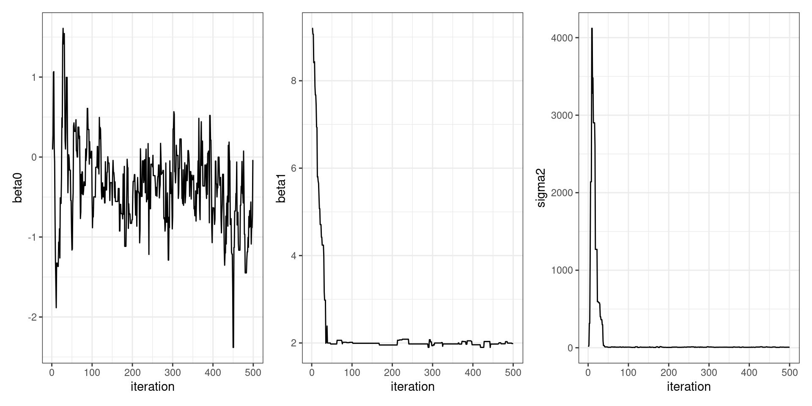
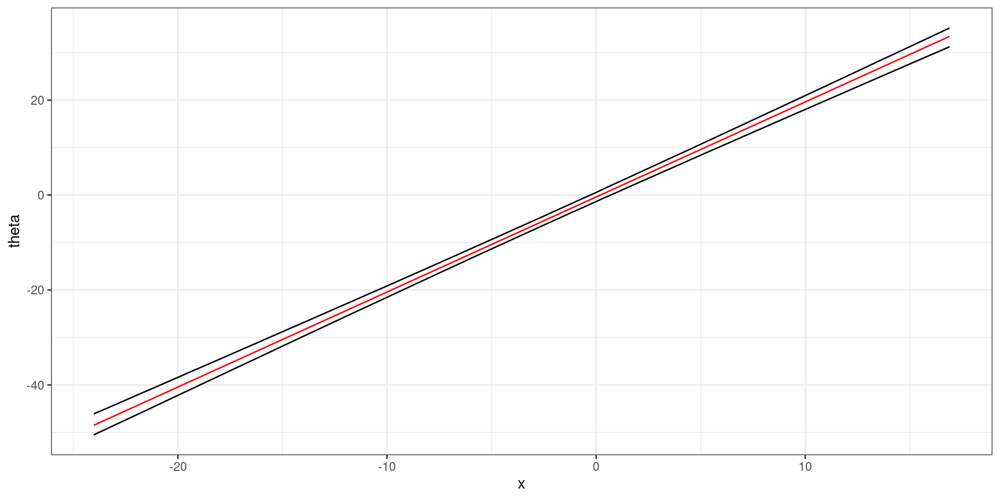

STA602 at Duke University
Consider the following data generative model and priors:
\[ \begin{aligned} Y_i | \beta_0, \beta_1, x_i &\sim N(\beta_0 + \beta_1x_i, \sigma^2)\\ \beta_0, \beta_1 &\sim \text{ iid } N(0, 2)\\ \sigma^2 &\sim \text{inverse-gamma}(2, 3) \end{aligned} \]
Tip: load library(invgamma) to use the dinvgamma function.
Below is code to sample from
\[ p(\beta_1, \beta_2, \sigma^2 | y_1, \ldots, y_n, x_1, \ldots, x_n) \].
set.seed(602)
logLikelihood = function(beta0, beta1, sigma2) {
mu = beta0 + (beta1 * x)
sum(dnorm(y, mu, sqrt(sigma2), log = TRUE))
}
logPrior = function(beta0, beta1, sigma2) {
dnorm(beta0, 0, sqrt(2), log = TRUE) +
dnorm(beta1, 0, sqrt(2), log = TRUE) +
dinvgamma(sigma2, 2, 3, log = TRUE)
}
logPosterior = function(beta0, beta1, sigma2) {
logLikelihood(beta0, beta1, sigma2) + logPrior(beta0, beta1, sigma2)
}
BETA0 = NULL
BETA1 = NULL
SIGMA2 = NULL
accept1 = 0
accept2 = 0
accept3 = 0
S = 500
beta0_s = 0.1
beta1_s = 10
sigma2_s = 1
for (s in 1:S) {
## propose and update beta0
beta0_proposal = rnorm(1, mean = beta0_s, .5)
log.r = logPosterior(beta0_proposal, beta1_s, sigma2_s) -
logPosterior(beta0_s, beta1_s, sigma2_s)
if(log(runif(1)) < log.r) {
beta0_s = beta0_proposal
accept1 = accept1 + 1
}
BETA0 = c(BETA0, beta0_s)
## propose and update beta1
beta1_proposal = rnorm(1, mean = beta1_s, .5)
log.r = logPosterior(beta0_s, beta1_proposal, sigma2_s) -
logPosterior(beta0_s, beta1_s, sigma2_s)
if(log(runif(1)) < log.r) {
beta1_s = beta1_proposal
accept2 = accept2 + 1
}
BETA1 = c(BETA1, beta1_s)
## propose and update sigma2
### note: sigma2 is positive only, we want to only propose positive values
sigma2_proposal = 1 / rgamma(1, shape = 1, sigma2_s)
log.r = logPosterior(beta0_s, beta1_s, sigma2_proposal) -
logPosterior(beta0_s, beta1_s, sigma2_s) -
dinvgamma(sigma2_proposal, 1, sigma2_s, log = TRUE) +
dinvgamma(sigma2_s, 1, sigma2_proposal, log = TRUE)
if(log(runif(1)) < log.r) {
sigma2_s = sigma2_proposal
accept3 = accept3 + 1
}
SIGMA2 = c(SIGMA2, sigma2_s)
}Is a Metropolis or Metropolis-Hastings algorithm used to sample \(\sigma^2\)? Hint: What is the proposal distribution used to sample \(\sigma^2\)? Is it symmetric? Can you show that it is or is not symmetric in R?
Create a trace plot for each parameter. How many iterations does it take for \(\beta_1\) to converge to the posterior? What is going on with the \(\sigma^2\) trace plot?
Report the effective sample size of each parameter, \(\beta_0\), \(\beta_1\), and \(\sigma^2\). Hint: load the coda package and check the lecture notes.
Go back and increase the length of the chain, \(S\), until you obtain approximately 200 ESS for each parameter. Re-examine your plots and discuss.
Report the posterior median and a 90% confidence interval for each unknown. Why is the median a better summary than the mean for \(\sigma^2\)?
Plot the posterior mean \(\theta(x)\) vs \(x\) where \(\theta(x) \equiv \beta_0 + \beta_1 x\).
Additionally, plot a 95% confidence band for \(\theta(x)\) vs \(x\) and interpret your plot.
A Metropolis-Hastings algorithm. inverse-gamma proposal is asymmetric.
Showing with R code:

\(\beta_1\) converges to the target after about 50 iterations.
Some samples from inv-gamma are huge, the huge variance results in a flatter likelihood and still get accepted.
library(patchwork)
parameterDF = data.frame(BETA0, BETA1, SIGMA2)
n = nrow(parameterDF)
p0 = parameterDF %>%
ggplot(aes(x = 1:n)) +
geom_line(aes(y = BETA0)) +
theme_bw() +
labs(x = "iteration", y = "beta0")
p1 = parameterDF %>%
ggplot(aes(x = 1:n)) +
geom_line(aes(y = BETA1)) +
theme_bw() +
labs(x = "iteration", y = "beta1")
p2 = parameterDF %>%
ggplot(aes(x = 1:n)) +
geom_line(aes(y = SIGMA2)) +
theme_bw() +
labs(x = "iteration", y = "sigma2")
p0 + p1 + p2set.seed(602)
logLikelihood = function(beta0, beta1, sigma2) {
mu = beta0 + (beta1 * x)
sum(dnorm(y, mu, sqrt(sigma2), log = TRUE))
}
logPrior = function(beta0, beta1, sigma2) {
dnorm(beta0, 0, sqrt(2), log = TRUE) +
dnorm(beta1, 0, sqrt(2), log = TRUE) +
dinvgamma(sigma2, 2, 3, log = TRUE)
}
logPosterior = function(beta0, beta1, sigma2) {
logLikelihood(beta0, beta1, sigma2) + logPrior(beta0, beta1, sigma2)
}
BETA0 = NULL
BETA1 = NULL
SIGMA2 = NULL
accept1 = 0
accept2 = 0
accept3 = 0
S = 10000
beta0_s = 0.1
beta1_s = 10
sigma2_s = 1
for (s in 1:S) {
## propose and update beta0
beta0_proposal = rnorm(1, mean = beta0_s, .5)
log.r = logPosterior(beta0_proposal, beta1_s, sigma2_s) -
logPosterior(beta0_s, beta1_s, sigma2_s)
if(log(runif(1)) < log.r) {
beta0_s = beta0_proposal
accept1 = accept1 + 1
}
BETA0 = c(BETA0, beta0_s)
## propose and update beta1
beta1_proposal = rnorm(1, mean = beta1_s, .5)
log.r = logPosterior(beta0_s, beta1_proposal, sigma2_s) -
logPosterior(beta0_s, beta1_s, sigma2_s)
if(log(runif(1)) < log.r) {
beta1_s = beta1_proposal
accept2 = accept2 + 1
}
BETA1 = c(BETA1, beta1_s)
## propose and update sigma2
### note: sigma2 is positive only, we want to only propose positive values
sigma2_proposal = 1 / rgamma(1, shape = 1, sigma2_s)
log.r = logPosterior(beta0_s, beta1_s, sigma2_proposal) -
logPosterior(beta0_s, beta1_s, sigma2_s) -
dinvgamma(sigma2_proposal, 1, sigma2_s, log = TRUE) +
dinvgamma(sigma2_s, 1, sigma2_proposal, log = TRUE)
if(log(runif(1)) < log.r) {
sigma2_s = sigma2_proposal
accept3 = accept3 + 1
}
SIGMA2 = c(SIGMA2, sigma2_s)
}
parameterDF = data.frame(BETA0, BETA1, SIGMA2)
apply(parameterDF, 2, effectiveSize) BETA0 BETA1 SIGMA2
1164.0398 361.9540 505.6284 | post. median | CI | |
|---|---|---|
| beta0 | -0.4 | (-1.2, 0.4) |
| beta1 | 2 | (1.9, 2.1) |
| sigma2 | 7.5 | (4.8, 12.5) |

The red line shows our posterior expectation of \(\theta(x)\) for each \(x\). The black bands show our 95% confidence interval \(\theta(x)\).
get_theta_CI = function(X) {
f = BETA0 + (BETA1 * X)
return(quantile(f, c(0.025, 0.975)))
}
get_theta_mean = function(X) {
f = BETA0 + (BETA1 * X)
return(mean(f))
}
xlo = min(x)
xhi = max(x)
xVal = seq(xlo, xhi, by = 0.01)
lower = NULL
upper = NULL
M = NULL
for (i in seq_along(xVal)) {
theta_CI = get_theta_CI(xVal[i])
lower = c(lower, theta_CI[[1]])
upper = c(upper, theta_CI[[2]])
M = c(M, get_theta_mean(xVal[i]))
}
df = data.frame(xVal, lower, upper, M)
df %>%
ggplot(aes(x = xVal)) +
geom_line(aes(y = lower)) +
geom_line(aes(y = upper)) +
geom_line(aes(y = M), col = "red") +
theme_bw() +
labs(y = "theta",
x = "x")